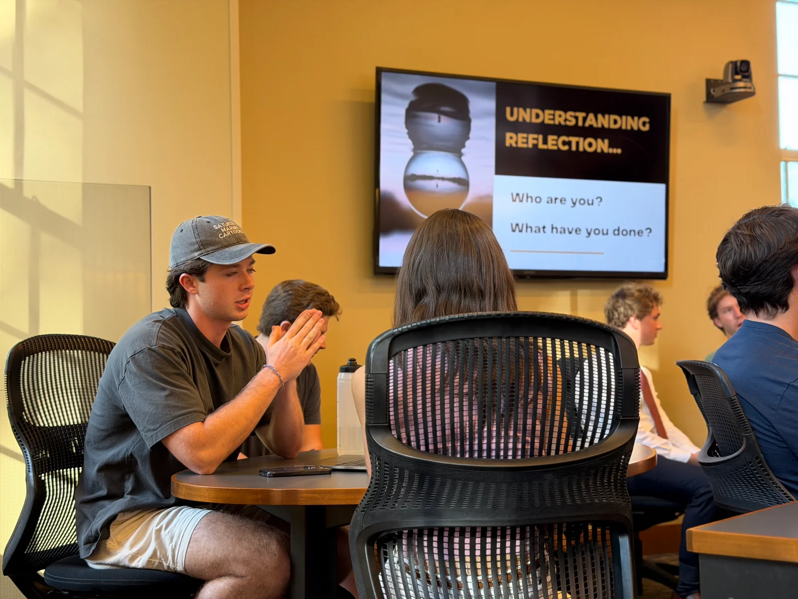

Understand the challenge.
Research the organization’s context, examine the problem, and explore possible approaches.
Our work
DCC connects Wake Forest students with nonprofits and small businesses through pro bono consulting. Our teams turn a business question into research, analysis, and recommendations.
Discuss a projectPro bono consulting
Semester-long projects give students the opportunity to work through a real challenge with a client. The work concludes with a presentation of findings and recommendations.
We’re a student-led club. Project conversations help us understand where our teams’ skills and a local organization’s needs fit together.
Research the organization’s context, examine the problem, and explore possible approaches.
Organize information, analyze data, and connect findings to the question at hand.
Bring the work together in a client presentation, with findings and practical recommendations.
From the classroom to the community

The Analyst Program connects preparation with experience.
The 14-person program combines client projects with case and fit interview practice, feedback, and conversations with practicing consultants.
Analysts remain part of the wider DCC community, learning and practicing alongside fellow members.
Meet the Analyst ProgramFor prospective clients
A useful first conversation starts with the question you want to answer.
Introduce your organization, the challenge you’re exploring, and your preferred timing. We’ll discuss whether there’s a fit for a student project.
Email us about a projectDeacon Consulting Club
Explore the program behind our student consulting teams.